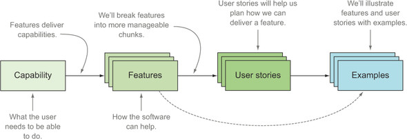
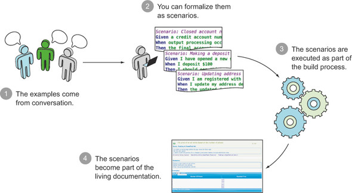

FEATURES AND SCENARIO
Each scenario always follows the same basic format :
Scenario: Some description of the scenario
Given some context
When some event
Then outcome
Each part of the scenario - the context, the event, and the outcome - can be extended by adding the And or But keyword :
Scenario: Some description of the scenario
Given some context
And more context
When some event
And second event occurs
Then outcome
And another outcome
But another outcome
Note
There’s no actual difference between, Then, And But or any of the other words that start each line. These keywords are all made available so that your scenarios are natural and readable.
Features deliver capabilities to stakeholders. We’ll use user stories to plan how we’ll deliver a feature. We’ll use examples to illustrate features and user stories.
When examples are expressed as scenarios, they can be automated and used to generate living documentation.
